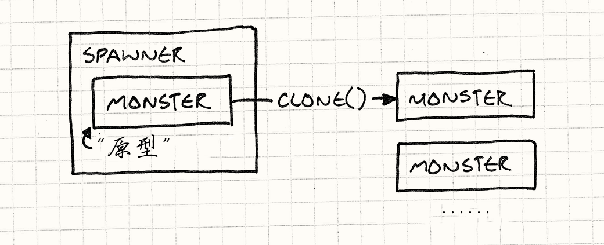
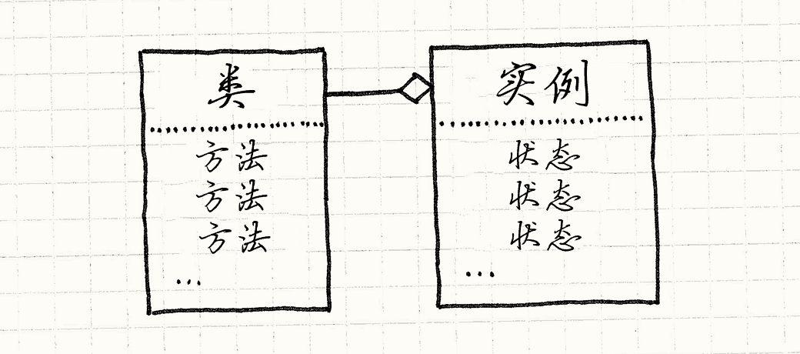
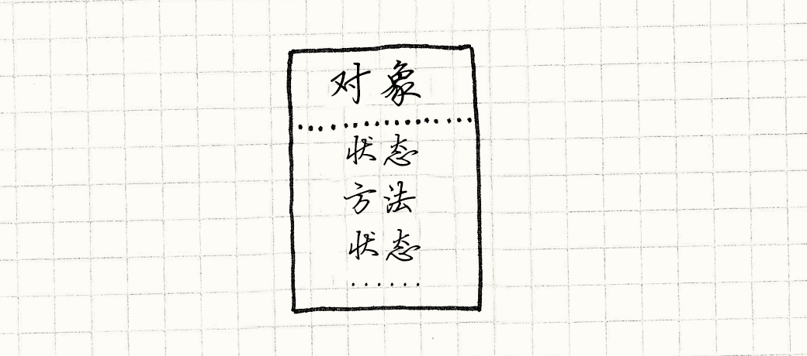
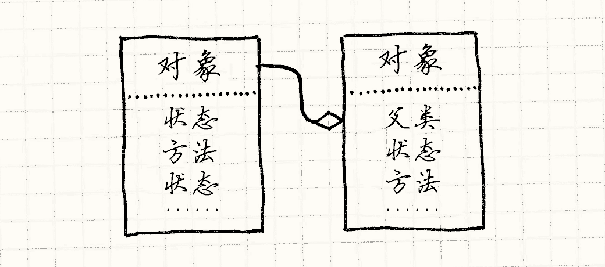
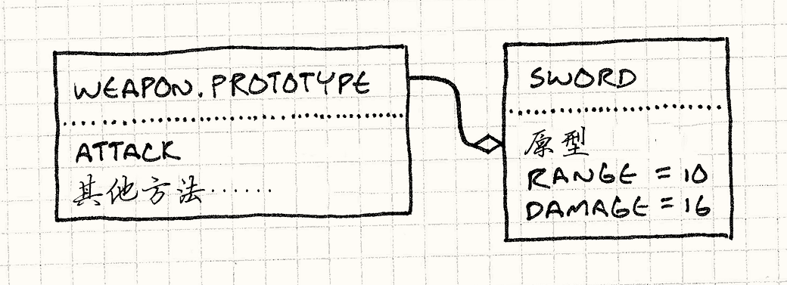

原型
Game Programming Patterns重访设计模式
第一次我听到“原型”这个词是在设计模式中。 今天，似乎每个人都在用这个词，但是他们讨论的不是设计模式。 我们会讲述设计模式，同样也会展示给你术语“原型”的有趣之处，和其出现的背后理念。 但首先，让我们重访原先的设计模式。
原型设计模式
假设我们要用Gauntlet的风格做款游戏。 我们有野兽和魔鬼蜂群围绕着英雄，争着要吃他的血肉。 这些不可口的晚餐同伴通过“生产者”进入这片区域，每种敌人有不同的生产者。
为了这个例子考虑，假设我们游戏中每种怪物都有不同的类——Ghost，Demon，Sorcerer等等，像这样：
class Monster { // Stuff... }; class Ghost : public Monster {}; class Demon : public Monster {}; class Sorcerer : public Monster {};
一个生产者构造特定种类怪物的实例。 为了在游戏中支持每一种怪物，我们可以残忍的逼迫它， 让每个怪物类都有生产者类，得到平行的类层次。

实现它看起来像是这样：
class Spawner { public: virtual ~Spawner() {} virtual Monster* spawnMonster() = 0; }; class GhostSpawner : public Spawner { public: virtual Monster* spawnMonster() { return new Ghost(); } }; class DemonSpawner : public Spawner { public: virtual Monster* spawnMonster() { return new Demon(); } }; // You get the idea...
除非你会因为这行代码获得工资， 将这些焊在一起很明显不是好方法。 众多类，众多引用，众多冗余，众多副本，众多重复自我……
原型模式提供了一个解决方案。 关键思路是一个对象可以产出与它自己相近的对象。 如果你有一个鬼影，你可以从它制造更多的鬼影。 如果你有一个恶魔，你可以制造其他恶魔。 任何怪物都可以被视为原型怪物来产出它自己的其他版本。
为了实现这一点，我们给出我们的基类Monster一个抽象方法clone()：
class Monster { public: virtual ~Monster() {} virtual Monster* clone() = 0; // Other stuff... };
每个怪兽子类提供一个实现，返回与它自己的类和状态都完全一样的新对象。举个例子：
class Ghost : public Monster { public: Ghost(int health, int speed) : health_(health), speed_(speed) {} virtual Monster* clone() { return new Ghost(health_, speed_); } private: int health_; int speed_; };
一旦我们所有的怪物都支持这个， 我们不需要为每个怪物类创建生产者类。我们只定义一个：
class Spawner { public: Spawner(Monster* prototype) : prototype_(prototype) {} Monster* spawnMonster() { return prototype_->clone(); } private: Monster* prototype_; };
它内部有保存一个怪物，一个隐藏的怪物， 它唯一的目标就是被生产者当做模板，去产生更多一样的怪物， 有点像一个从来不离开巢穴的蜂后。

为了创造鬼魂生产者，我们创建一个原型鬼魂实例然后创建拥有这个实例的产出者：
Monster* ghostPrototype = new Ghost(15, 3); Spawner* ghostSpawner = new Spawner(ghostPrototype);
我们这个模式的灵巧部分是它不但拷贝原型的类，也拷贝它的状态。 这就意味着我们可以创建生产者生产快速鬼魂，虚弱鬼魂，慢速鬼魂，只需创建一个合适的原型鬼魂。
我在这个模式中找到了一些既优雅又惊讶的东西。 我无法相信我找到的东西，但我更无法想象现在不知道这些东西的自己。
它工作的如何？
好吧，我们不需要为每个怪物创建单独的生产者类，那很好。
但我们确实需要在每个怪物类中实现clone()。
这和生产者中的代码一样多。
当你坐下来试着写一个正确的clone()，这里有些令人不快的语义漏洞。
做深层拷贝还是浅层的呢？换言之，如果恶魔拿着草叉，克隆恶魔也要克隆草叉吗？
同时，这看上去既不减少我们在已存问题上的代码， 事实上这里还有些人为的问题。 我们需要将每个怪物有独立的类作为前提条件。 这绝对不是当今大多数游戏引擎运转的方法。
我们大部分以痛苦的方式学到，这样庞杂的类层次管理起来是很痛苦的，那就是我们为什么用组件模式和类型对象为不同的实体建模，无需一一建构自己的类。
生产函数
哪怕每个怪物都有不同的类，这里还有其他方式来为剥家猫的皮。 不是使用为每个怪物建立分离的生产者类，我们可以创建生产函数，就像这样：
Monster* spawnGhost() { return new Ghost(); }
这比将不同类型怪兽的构建包到一起使用了更少的样板。一个生产者类可以简单地存储一个函数指针：
typedef Monster* (*SpawnCallback)(); class Spawner { public: Spawner(SpawnCallback spawn) : spawn_(spawn) {} Monster* spawnMonster() { return spawn_(); } private: SpawnCallback spawn_; };
为了给鬼魂创建生产者，你需要做：
Spawner* ghostSpawner = new Spawner(spawnGhost);
模板
到了现在，大多数C++开发者很熟悉模板了。 我们的生产者类需要构建各种类型的实例，但是我们不想为特定的怪物类硬编码。 自然的解决方案是将它作为类型参数，就是模板允许我们做的：
class Spawner { public: virtual ~Spawner() {} virtual Monster* spawnMonster() = 0; }; template <class T> class SpawnerFor : public Spawner { public: virtual Monster* spawnMonster() { return new T(); } };
像这样使用它：
Spawner* ghostSpawner = new SpawnerFor<Ghost>();
第一公民类型
前面的两个解决方案完成了需要类的需求，Spawner，它用类型参数化。
在C++中，类型不是第一公民，所以需要一些改动。
如果你使用了动态类型语言比如JavaScript，Python，或者Ruby，
它们的类是可以传递的对象，你可以更加直接的解决这个问题。
当你完成一个生产者，直接向它传递该构建的怪物类——那个真实的运行时对象，代表了怪物的类。小菜一碟。
使用这些选项，我不能诚实的说我找到了一种情况， 原型设计模式是最好的方案。 也许你的经验有所不同，但现在把它搁到一边，讨论点别的：作为一种语言范式的原型。
原型语言范式
很多人认为“面向对象编程”和“类”是同义词。 OOP的定义感觉像是相反宗教信仰的教义， 公平而无争议的是OOP让你定义“对象”，将数据和代码绑定在一起。 与结构化的语言比如C相比，与函数语言比如Scheme相比， OOP定义的特性是它将状态和行为紧紧地绑在一起。
你也许认为类是唯一可以完成这个的方法， 但是一大堆家伙包括Dave Ungar和Randall Smith一直在拼命区分。 他们在80年代创建了一种叫做Self的语言。它可以是OOP的，同时没有类
Self语言
纯粹的感觉上，Self比一个基于类的语言更加面向对象 。我们认为OOP是将状态和行为绑在一起，但是有类的语言实际在他们之间画了一条线。
考虑你最喜欢的基于类的语言的语义。 为了接触对象中的一些状态，你实例的内存中查询。状态是包含在实例之中的。
但是，为了调用方法，你查询实例的类， 然后你在那里查询方法。行为被包含在类中。 获得方法总需要通过中间层，这意味着字段和方法是不同的。

Self结束了这种分歧。找任何东西，你只需在对象中找。 实例同时包含状态和行为。你可以有一个对象，它有一个完全独特的方法。

如果这就是Self做的，那它很难使用。 在基于类的语言中，继承，不管它的缺陷，给了有用的机制来重用多态代码和避免复制。 为了不用类而实现一些相同的东西，Self拥有委托。
为了在对象中寻找字段或者调用方法，首先在对象内部查找。 如果有，就完成了。如果没有，在对象的父类中寻找。 这是一个对其他对象的引用。当我们没能在第一个对象中找到属性，我们尝试它的父母，然后父母的父母，继续下去。换言之，失败的查找被委托给对象的父母。

父对象让我们在不同对象间重用行为（还有状态！），所以我们覆盖了类的公共部分。
另外一个类做的关键事情就是给了我们创建实例的方法。
当你需要一个新的某物，你可以直接new Thingamabob()，或者随便什么你喜欢的语言表达法。
类是它实例的工厂。
不用类，我们怎样创建新东西？ 特别的，我们如何创建一堆有共同点的新东西？ 就像这个设计模式，你在Self中的方式是使用克隆。
在Self中，就好像每一个对象都自动支持原型设计模式。 任何对象都能被克隆。为了获得一堆相似的对象，你：
-
将对象拍打成你想要的形状。你可以直接克隆系统内建的基本
Object，然后向其中添加字段和方法。 -
克隆它来产出……额……随你想要多少克隆。
这给了我们原型模式的优雅，而无需自己沉闷的实现clone()；它被内建在系统中。
这是一个如此美妙，紧密，最小化的系统， 一听说它，我就开始创建一个基于原型的语言来获取更多经验。
它运行的如何？
我急切的想要使用一个纯粹的基于原型的语言，但是当我完成并运行它， 我发现了一个令人不快的事实：用它编程没那么有趣。
是的，语言很容易实现，那是因为它把复杂度推给了用户。 一旦我们开始试着使用，我发现我想念类给的结构。 我最终停在构建语言所没有的库概念。
鉴于我之前的经验都来自基于类的语言，因此我的头脑可能被那个范式污染了。 但是我的直觉是大部分人还是喜欢认真定义的“那些事物”。
除去基于类语言的成功，看看有多少游戏明确指定了角色类以及不同敌人物品技能的清单， 每个都有整齐的标签。你不会在游戏中看到每个怪物都是独特的雪团， 像“洞穴人和哥布林还有雪混合在一起”的东西。
原型是非常酷的范式，也是我希望有更多人了解的东西， 但我很庆幸我们不是每天都用他们编程。 我看到的完全皈依原型的代码是一团浆糊， 我很难用它完成点什么。
JavaScript又怎么样呢？
好吧，如果基于原型的语言不那么友好，怎么解释JavaScript呢？ 这是一个有原型的语言，每天被数百万人使用。运行JavaScript的机器数量超过了地球上其他所有的语言。
Brendan Eich，JavaScript的缔造者， 从Self中直接吸收灵感，很多JavaScript的语义都是基于原型的。 每个对象都有属性的集合，字段和“方法”（事实上只是存储为字段的函数）都在其中。 A对象可以拥有B对象，B对象被称为A对象的“原型”， 如果A对象的字段获取失败就会委托给B对象。
但是不管那个，我相信JavaScript在实践中更像是基于类的而不是基于原型的。 一个关键点是JavaScript将一些基于原型的语言核心操作取了出来，克隆，不见了。
在JavaScript中没有方法来克隆一个对象。
最接近的是Object.create()，允许你创建新对象委托给现有的。
甚至在ECMAScript5之前都没有添加，那已是JavaScript出现后的十四年了。
不用克隆，让我带你浏览一下JavaScript中定义类和创建对象的经典方法。
从一个构造器函数开始：
function Weapon(range, damage) { this.range = range; this.damage = damage; }
这创建了一个新对象并初始化了它的字段。你像这样引入它：
var sword = new Weapon(10, 16);
这里的new引入了Weapon()函数的实体，
而this绑定到新的空对象上。
实体在它上面添加了一系列字段，然后现在填满的对象自动返回了。
new也为你做了另外一件事。
当它创建那个空对象，它将它和一个原型对象连接起来。
你可以用Weapon.prototype来直接使用它。
当状态添加到构建器中时，为了定义行为，你通常向原型对象添加方法。就像这样：
Weapon.prototype.attack = function(target) { if (distanceTo(target) > this.range) { console.log("Out of range!"); } else { target.health -= this.damage; } }
这添加了一个attack属性给武器原型，属性的值是一个函数。
由于每个对象都通过new Weapon()委托给了Weapon.prototype，
你现在可以调用一个sword.attack()，它就会调用那个函数。
看上去像是这样：

让我们回顾一下：
-
你创建对象的方法是通过“new”操作，引入代表类型的对象——构造器函数。
-
状态被存储在实例中。
-
行为通过一个间接层——原型的委托——被存储在分散的对象中，代表了一系列特定类型对象的共享方法。
说我疯了吧，但这听起来很像是我之前描述的类。 你可以在JavaScript中写原型风格的代码（没有克隆）， 但是语言语义和常用方法更推荐基于类实现。
个人而言，我认为这是好事。 就像我说的，我发现完全使用原型让代码很难处理， 所以我喜欢JavaScript将整个核心语义包裹在更漂亮的东西中。
为数据模型建立原型
好吧，我不断的讨论不喜欢原型的原因，这让这一章稍有褪色。 我认为这本书该比惨案更加欢乐些，所以让我们在原型确实有用，或者更加精确，委托有用的地方结束这个话题。
如果你比较了程序与数据的字节数， 你可以看到数据的占比随着编程的发展稳定地增长。 早期的游戏在程序中生成几乎任何东西，这样可以适应磁盘和老式游戏盒。 在今日的游戏中，代码只是驱动游戏的“引擎”，游戏是完全由数据定义的。
这很好，但是将内容推到数据文件中不会魔术般解决组织大工程的挑战。 如果有什么区别的话，那就是变难了。 我们使用编程语言的原因就是它们有办法处理复杂性。
不再将一堆代码拷来拷去，我们将其移入函数中，这样可以通过名字调用。 不再一堆类之间复制方法，我们将其放入分离的类中，其他类可以继承或者组合它。
当你的游戏数据达到一定规模时，你真的需要考虑更加简单的特性。 数据模式是个我不指望在这里能说清的问题， 但我确实希望将一个思路扔给你，让你在游戏中考虑：使用原型和委托来重用数据。
假设我们为我早先提到的无耻Gauntlet rip-off定义数据模型。游戏设计者需要在很多文件中设定怪物和物品的属性。
一个常用的方法是使用JSON。 数据实体是基本图，或者属性包，或者其他什么术语， 因为程序员就喜欢为已有的东西发明新名字。
所以游戏中的哥布林也许被定义为像这样的东西：
{ "name": "goblin grunt", "minHealth": 20, "maxHealth": 30, "resists": ["cold", "poison"], "weaknesses": ["fire", "light"] }
这看上去很易懂，哪怕是最讨厌文字的设计者也能完成。 所以你给哥布林大家族添加几个兄弟分支：
{ "name": "goblin wizard", "minHealth": 20, "maxHealth": 30, "resists": ["cold", "poison"], "weaknesses": ["fire", "light"], "spells": ["fire ball", "lightning bolt"] } { "name": "goblin archer", "minHealth": 20, "maxHealth": 30, "resists": ["cold", "poison"], "weaknesses": ["fire", "light"], "attacks": ["short bow"] }
现在，如果这是代码，我们的美感就被刺激了。 在实体间有很多的重复性，训练优良的程序员讨厌它。 它浪费了空间，消耗了作者更多时间。 你需要仔细阅读代码才知道这些数据是不是相同的。 这让维护头疼。 如果我们决定让所有哥布林变强，需要记得将他们三个都更新一遍。糟糕糟糕糟糕。
如果这是代码，我们会为“哥布林”创造一个抽象，然后在三个哥布林类型中重用它。 但是愚蠢的JSON不知道这么做。所以让我们把它做得更加巧妙。
我们像对象有"prototype"字段那样声明它，
然后定义它委托给的对象的名字。
任何不在第一个对象中的原型都退回在原型中查找。
通过这样做，我们可以简单地定义大群哥布林：
{ "name": "goblin grunt", "minHealth": 20, "maxHealth": 30, "resists": ["cold", "poison"], "weaknesses": ["fire", "light"] } { "name": "goblin wizard", "prototype": "goblin grunt", "spells": ["fire ball", "lightning bolt"] } { "name": "goblin archer", "prototype": "goblin grunt", "attacks": ["short bow"] }
由于弓箭手有grunt作原型，我们不需要在他们中重复血量，防御和弱点。 我们给数据模型增加的新逻辑超简单——基本的单一委托——但我们已经摆脱了一堆冗余。
一个有趣的事情是，我们没有为具体的哥布林委托的抽象原型设置更进一步“基本哥布林”。 相反，我们选择了一个最简单的哥布林，然后委托给它。
在基于原型的系统中，一个对象可以克隆产生新对象是很自然的， 我认为在这里也一样自然。这特别适合记录那些只有一项特别之处实体的游戏数据。
想想Boss和其他独特事物，它们通常是更加平凡事物的重新定义， 而原型委托是一个定义它们的好方法。 断头魔剑，就是一把拥有加成的长剑，可以像下面这样表示：
{ "name": "Sword of Head-Detaching", "prototype": "longsword", "damageBonus": "20" }
在游戏引擎上耗费一点额外的力量，就能让设计者更方便地添加多种不同的武器和野兽，这种丰富度会取悦玩家。